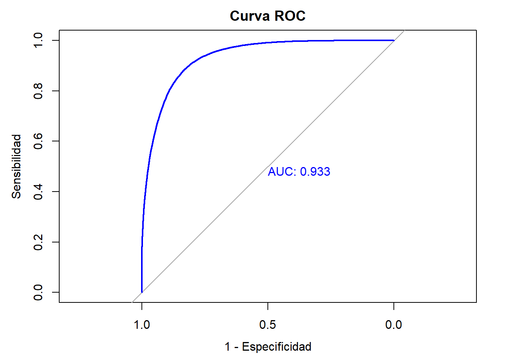

Capítulo 4 Capacidad predictiva del modelo de regresión logística ajustado
Luego de ajustar el modelo de regresión logística para poder interpretar aquellas variables que más aportan a la probabilidad de tener un empleo formal, se quiere ahora verificar su capacidad predictiva. Se divide el conjunto de datos de la siguiente forma: 80% para training y 20% para test. Posteriormente, se estima el modelo para el conjunto de training y se evalúan sus métricas.
## Cargando paquete requerido: ggplot2## Cargando paquete requerido: latticeset.seed(123)
training_samples <- createDataPartition(datos_winsor$formalidad, p = .8, list = FALSE)
train <- datos_winsor[training_samples, ]
test <- datos_winsor[-training_samples, ]model <- glm(formalidad ~ CLASE + Sexo + Edad +
`Parentesco con jefe de hogar` + `¿Usted se reconoce como?` +
`Estado civil` + `¿Afiliado, cotizante o beneficiario de seguridad social en salud?` + `Mayor nivel educativo alcanzado` +
`Para la ocupación que desempeña, ¿tiene algún tipo de contrato` +
`¿Cuánto tiempo lleva en esta empresa trabajando de forma continua (meses)?` +
`Tipo de ocupación` +
`El mes pasado, ¿recibió pagos por concepto de arriendos o pensiones?` +
`¿Es propietario de una o varias propiedades inmuebles?` +
`Tipo de vivienda` + `¿Tiene servicio de energía eléctrica?` +
`Estrato para tarifa` + `Número de hogares en la vivienda` +
`Número de cuartos` + `La vivienda ocupada por este hogar es` +
`Total de personas en el hogar` + AREA +
`Meses que estuvo sin empleo entre su trabajo actual y el anterior` +
`Tiempo de desplazamiento hasta su sitio de trabajo`,
data = train, family = binomial(link = "logit"))| Observations | 282938 |
| Dependent variable | formalidad |
| Type | Generalized linear model |
| Family | binomial |
| Link | logit |
| χ²(92) | 202469.58 |
| p | 0.00 |
| Pseudo-R² (Cragg-Uhler) | 0.68 |
| Pseudo-R² (McFadden) | 0.52 |
| AIC | 186002.63 |
| BIC | 186984.06 |
| Est. | S.E. | z val. | p | |
|---|---|---|---|---|
| (Intercept) | -12.69 | 0.58 | -21.85 | 0.00 |
| CLASEUrbano | 0.17 | 0.02 | 7.65 | 0.00 |
| SexoMujer | -0.30 | 0.01 | -22.97 | 0.00 |
| Edad | 0.01 | 0.00 | 11.21 | 0.00 |
Parentesco con jefe de hogarHijo(a), hijastro(a)
|
0.10 | 0.04 | 2.45 | 0.01 |
Parentesco con jefe de hogarJefe(a) del hogar
|
0.33 | 0.04 | 7.75 | 0.00 |
Parentesco con jefe de hogarNieto(a)
|
-0.23 | 0.10 | -2.25 | 0.02 |
Parentesco con jefe de hogarOtro no pariente
|
0.04 | 0.05 | 0.83 | 0.41 |
Parentesco con jefe de hogarOtro pariente
|
0.15 | 0.18 | 0.84 | 0.40 |
Parentesco con jefe de hogarPareja, esposo(a), cónyuge, compañero(a)
|
0.18 | 0.05 | 3.96 | 0.00 |
Parentesco con jefe de hogarPensionista
|
0.16 | 0.06 | 2.50 | 0.01 |
Parentesco con jefe de hogarTrabajador
|
-0.38 | 0.06 | -6.07 | 0.00 |
¿Usted se reconoce como?Indígena
|
0.43 | 0.44 | 0.97 | 0.33 |
¿Usted se reconoce como?Negro (a), mulato (a) (afrodescendiente), afrocolombiano(a)
|
0.41 | 0.44 | 0.92 | 0.36 |
¿Usted se reconoce como?Ninguno de los anteriores
|
0.55 | 0.44 | 1.26 | 0.21 |
¿Usted se reconoce como?Palenquero (a) de San Basilio
|
0.50 | 0.54 | 0.91 | 0.36 |
¿Usted se reconoce como?Raizal del archipiélago de San Andrés, Providencia y Santa Catalina
|
2.09 | 0.46 | 4.54 | 0.00 |
Estado civilEsta separado (a) o divorciado (a)
|
-0.42 | 0.02 | -18.07 | 0.00 |
Estado civilEsta soltero (a)
|
-0.41 | 0.02 | -17.59 | 0.00 |
Estado civilEsta viudo (a)
|
-0.78 | 0.05 | -15.82 | 0.00 |
Estado civilNo esta casado (a) y vive en pareja hace dos años o más
|
-0.07 | 0.02 | -3.60 | 0.00 |
Estado civilNo esta casado(a) y vive en pareja hace menos de dos años
|
-0.25 | 0.04 | -6.48 | 0.00 |
¿Afiliado, cotizante o beneficiario de seguridad social en salud?No sabe, no informa
|
3.00 | 0.72 | 4.14 | 0.00 |
¿Afiliado, cotizante o beneficiario de seguridad social en salud?Sí
|
7.30 | 0.34 | 21.62 | 0.00 |
Mayor nivel educativo alcanzadoBásica secundaria
|
0.18 | 0.03 | 7.30 | 0.00 |
Mayor nivel educativo alcanzadoDoctorado
|
3.37 | 0.29 | 11.48 | 0.00 |
Mayor nivel educativo alcanzadoEspecialización
|
3.80 | 0.05 | 71.29 | 0.00 |
Mayor nivel educativo alcanzadoMaestría
|
3.76 | 0.09 | 41.64 | 0.00 |
Mayor nivel educativo alcanzadoMedia académica
|
1.06 | 0.02 | 52.59 | 0.00 |
Mayor nivel educativo alcanzadoMedia técnica
|
1.41 | 0.04 | 37.23 | 0.00 |
Mayor nivel educativo alcanzadoNinguno
|
-0.66 | 0.06 | -10.75 | 0.00 |
Mayor nivel educativo alcanzadoNo sabe, no informa
|
0.92 | 1.50 | 0.61 | 0.54 |
Mayor nivel educativo alcanzadoNormalista
|
1.67 | 0.15 | 10.84 | 0.00 |
Mayor nivel educativo alcanzadoPreescolar
|
-9.63 | 36.43 | -0.26 | 0.79 |
Mayor nivel educativo alcanzadoTécnica profesional
|
2.00 | 0.03 | 76.64 | 0.00 |
Mayor nivel educativo alcanzadoTecnológica
|
2.18 | 0.03 | 64.33 | 0.00 |
Mayor nivel educativo alcanzadoUniversitaria
|
2.42 | 0.03 | 95.56 | 0.00 |
Para la ocupación que desempeña, ¿tiene algún tipo de contratoSí
|
2.72 | 0.02 | 115.59 | 0.00 |
¿Cuánto tiempo lleva en esta empresa trabajando de forma continua (meses)?
|
0.00 | 0.00 | 20.62 | 0.00 |
Tipo de ocupaciónJornalero o peón
|
-3.67 | 1.04 | -3.53 | 0.00 |
Tipo de ocupaciónObrero o empleado de empresa particular
|
2.10 | 0.03 | 61.57 | 0.00 |
Tipo de ocupaciónObrero o empleado del gobierno
|
8.38 | 0.50 | 16.75 | 0.00 |
Tipo de ocupaciónPatrón o empleador
|
2.22 | 0.05 | 43.06 | 0.00 |
Tipo de ocupaciónTrabajador familiar sin remuneración
|
0.71 | 0.09 | 8.30 | 0.00 |
Tipo de ocupaciónTrabajador por cuenta propia
|
1.11 | 0.04 | 29.27 | 0.00 |
Tipo de ocupaciónTrabajador sin remuneración en empresas o negocios de otros hogares
|
0.46 | 0.05 | 8.99 | 0.00 |
El mes pasado, ¿recibió pagos por concepto de arriendos o pensiones?Sí
|
1.49 | 0.03 | 48.11 | 0.00 |
¿Es propietario de una o varias propiedades inmuebles?Sí
|
0.21 | 0.02 | 9.39 | 0.00 |
Tipo de viviendaCasa
|
-0.07 | 0.01 | -5.14 | 0.00 |
Tipo de viviendaCuarto (s) en inquilinato
|
-0.36 | 0.06 | -6.26 | 0.00 |
Tipo de viviendaCuarto (s) en otro tipo de estructura
|
-0.18 | 0.13 | -1.45 | 0.15 |
Tipo de viviendaOtra vivienda (carpa, vagón, embarcación, cueva, refugio natural, etc.)
|
0.44 | 0.50 | 0.89 | 0.37 |
Tipo de viviendaVivienda indígena
|
0.64 | 0.17 | 3.80 | 0.00 |
¿Tiene servicio de energía eléctrica?Sí
|
0.32 | 0.13 | 2.41 | 0.02 |
Estrato para tarifaBajo
|
-1.06 | 0.06 | -16.40 | 0.00 |
Estrato para tarifaBajo - bajo
|
-1.43 | 0.07 | -22.00 | 0.00 |
Estrato para tarifaConexión pirata
|
-1.65 | 0.09 | -18.66 | 0.00 |
Estrato para tarifaMedio
|
-0.54 | 0.07 | -7.97 | 0.00 |
Estrato para tarifaMedio - alto
|
-0.21 | 0.08 | -2.71 | 0.01 |
Estrato para tarifaMedio - bajo
|
-0.81 | 0.06 | -12.62 | 0.00 |
Estrato para tarifaNo sabe o cuenta con planta eléctrica
|
-1.82 | 0.12 | -15.48 | 0.00 |
Número de hogares en la vivienda
|
-0.25 | 0.05 | -4.89 | 0.00 |
Número de cuartos
|
0.15 | 0.01 | 20.24 | 0.00 |
La vivienda ocupada por este hogar esEn usufructo
|
-0.04 | 0.02 | -2.19 | 0.03 |
La vivienda ocupada por este hogar esOtra
|
0.06 | 0.04 | 1.44 | 0.15 |
La vivienda ocupada por este hogar esPosesión sin titulo (ocupante de hecho) ó propiedad colectiva
|
-0.01 | 0.04 | -0.14 | 0.89 |
La vivienda ocupada por este hogar esPropia, la están pagando
|
0.49 | 0.03 | 14.41 | 0.00 |
La vivienda ocupada por este hogar esPropia, totalmente pagada
|
0.23 | 0.02 | 13.19 | 0.00 |
Total de personas en el hogar
|
-0.06 | 0.00 | -13.32 | 0.00 |
| AREABarranquilla AM | -0.52 | 0.04 | -13.28 | 0.00 |
| AREABogotá DC | -0.11 | 0.04 | -2.73 | 0.01 |
| AREABucaramanga AM | -0.21 | 0.04 | -5.37 | 0.00 |
| AREACali AM | -0.19 | 0.04 | -5.08 | 0.00 |
| AREACartagena | -0.25 | 0.04 | -6.41 | 0.00 |
| AREACúcuta AM | -0.31 | 0.04 | -7.64 | 0.00 |
| AREAFlorencia | -0.32 | 0.04 | -7.56 | 0.00 |
| AREAIbagué | -0.38 | 0.04 | -8.74 | 0.00 |
| AREAManizales AM | 0.12 | 0.04 | 3.05 | 0.00 |
| AREAMedellín AM | 0.18 | 0.04 | 4.89 | 0.00 |
| AREAMontería | -0.35 | 0.04 | -8.36 | 0.00 |
| AREANeiva | -0.13 | 0.04 | -3.09 | 0.00 |
| AREAPasto | -0.53 | 0.04 | -13.41 | 0.00 |
| AREAPereira AM | 0.06 | 0.04 | 1.68 | 0.09 |
| AREAPopayán | -0.72 | 0.04 | -17.52 | 0.00 |
| AREAQuibdó | -0.37 | 0.05 | -7.93 | 0.00 |
| AREARiohacha | -0.53 | 0.05 | -11.78 | 0.00 |
| AREASanta Marta | -0.39 | 0.04 | -9.39 | 0.00 |
| AREASincelejo | -0.70 | 0.04 | -16.11 | 0.00 |
| AREATunja | -0.50 | 0.04 | -11.97 | 0.00 |
| AREAValledupar | -0.64 | 0.04 | -14.88 | 0.00 |
| AREAVillavicencio | -0.38 | 0.04 | -9.62 | 0.00 |
Meses que estuvo sin empleo entre su trabajo actual y el anterior
|
-0.01 | 0.00 | -8.80 | 0.00 |
Tiempo de desplazamiento hasta su sitio de trabajo
|
0.01 | 0.00 | 45.52 | 0.00 |
| Standard errors: MLE |
El modelo estimado para training es estadísticamente significativo, y sigue siendo capaz de predecir el 68% de la variabilidad de la variable respuesta.
probabilidades <- predict(model, test, type = "response")
prediccion_clase <- ifelse(probabilidades > 0.5, 1, 0)## Actual
## Predicted 0 1
## 0 34039 4466
## 1 5731 26498accuracy <- sum(diag(confusion)) / sum(confusion)
precision <- confusion["1", "1"] / sum(confusion["1", ])
recall <- confusion["1", "1"] / sum(confusion[, "1"])
f1_score <- 2 * (precision * recall) / (precision + recall)
cat("Accuracy:", accuracy, "\n")## Accuracy: 0.8558402## Precision: 0.8221788## Recall: 0.855768## F1 Score: 0.8386372A partir de las métricas que se muestran en la tabla anterior, con un accuracy de 0.85, el modele es capaz de predecir correctamente casi el 86% de las observaciones. LA precisión muestra que cada vez que el modelo predice formal, lo hace correctamente el 82% de las veces. Con un F1 score de 83% el modelo parecer ser equilibrado sin favorecer falsos positivos o falsos negativos.
## Type 'citation("pROC")' for a citation.##
## Adjuntando el paquete: 'pROC'## The following objects are masked from 'package:stats':
##
## cov, smooth, var## Setting levels: control = 0, case = 1## Setting direction: controls < cases##
## Call:
## roc.default(response = test$formalidad, predictor = predict(model, test, type = "response"), ci = T)
##
## Data: predict(model, test, type = "response") in 39770 controls (test$formalidad 0) < 30964 cases (test$formalidad 1).
## Area under the curve: 0.9327
## 95% CI: 0.931-0.9345 (DeLong)## Setting levels: control = 0, case = 1## Setting direction: controls < casesplot(roc_obj,
main = "Curva ROC",
xlab = "1 - Especificidad",
ylab = "Sensibilidad",
col = "blue",
print.auc = TRUE)
## AUC: 0.9327256El valor del área bajo la curva es de 0.93. Cifra cercana a 1 que da luces sobre la capacidad predictiva el modelo. Este es capaz de discriminar correctamente trabajadores formales el 93% de las veces.